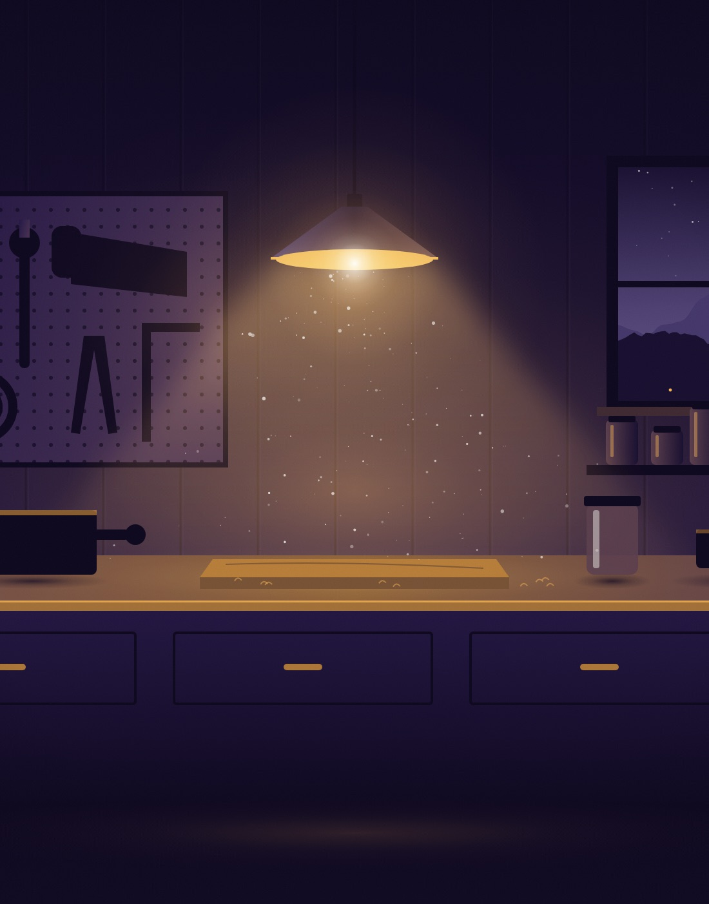
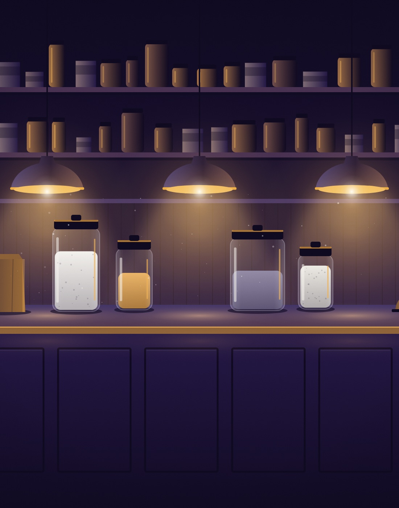
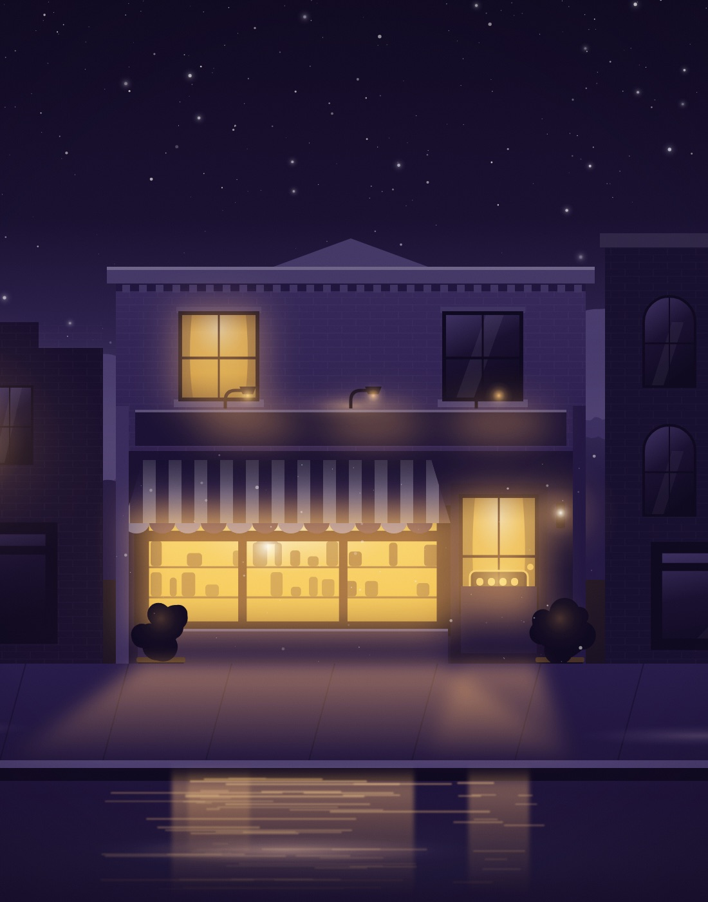

9:40 PM · The bench
9:40 PM · The bench
10:15 PM · The books
11:05 PM · Lights outThis is where a business really gets built.
Somebody’s finishing the books, fixing tomorrow’s order, answering one more email.